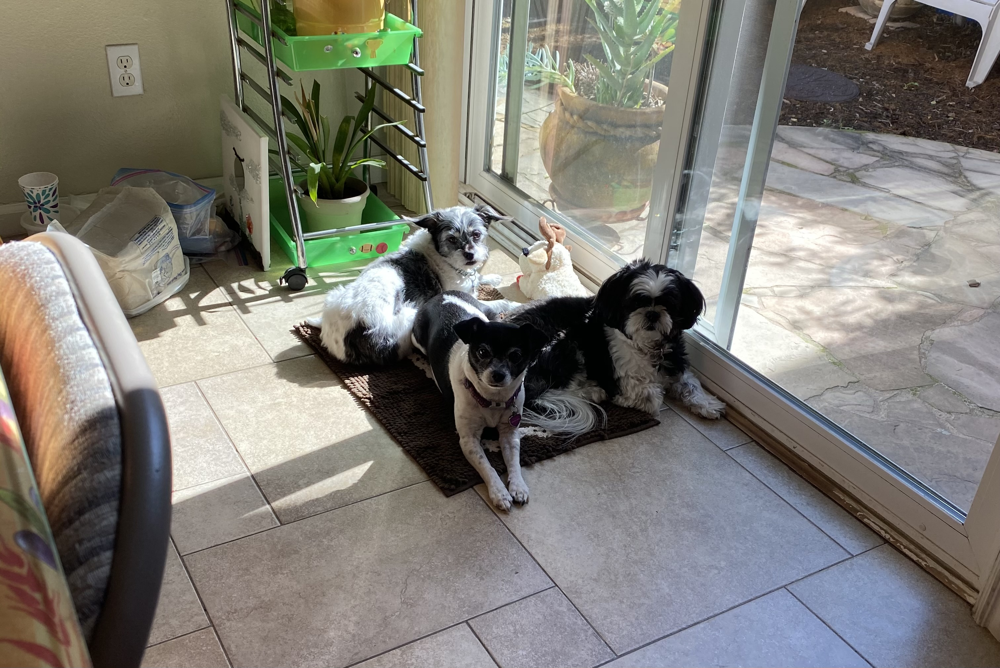
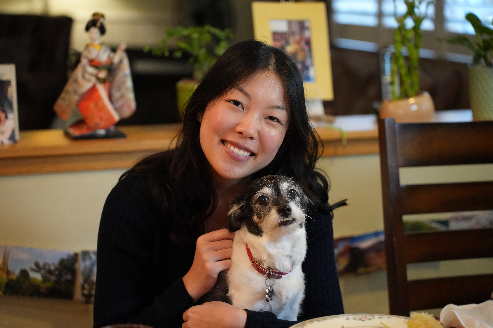

Welcome to Clarisse's website! I designed this website myself (pixel art included)
so feel free to play around. The code is published on my GitHub (you can find the link to it
under my projects section).
This room is based off of my childhood room back home! You can move the dog around using the
"W", "A", "S", "D" keys or using the arrow keys.
I have 3 sections that become clickable when you move closer to them:
1) The bed: This is my about me/school section!
2) The desk: This is my projects section!
3) The bed: This is my experience section!
I hope you enjoy!
Hi! I'm Clarisse and I am a second year at the University of Chicago
majoring in Computer Science with a specialization in Machine
Learning! I was born and raised in San Jose, CA and I have 3 adorable dogs.


I'm very interested in using computer science to aid environmental initatives. I'm currently
exploring different avenues to do that (be it at the computing level, making machine
learning more accessible to non-computer scientists, or other). I have taken
classes such as data structures and algorithms, functional programming, and systems programming.
In my free time, I like to watch ballet (I did ballet for 10+ years!), do origami (a work
in progess), or spend time with my dogs outside. I also want to start getting into quilling or
baking soon!
My school email is clarissec@uchicago.edu.
Welcome to my projects section! My GitHub is clarissecheung
so feel free to check it out! Here are some of my projects:
> Spot, an AI Gym Coach
I built Spot (along with 2 teammates!) for an AI
hackathon at UChicago. In Spot, you can record a workout vide and from there it
uses computer vision (specifically MediaPipe for pose estimation) to extract
your body's joint angles using 33 landmarks, runs them through a rules-based
form analysis engine, and then passes everything off to Gemini via an API to
generate live coaching feedback. At the end of each exercise, you get a form
score, categorized feedback, and recommendations for exercises like squats,
deadlifts, pushups, etc. The tech stack is a React + TypeScript frontend and
a Python FastAPI backend, with Firebase handling auth and Firestore storing
workout history. It was a great excuse to get real experience with computer vision
and LLM integration in a real application and we ended up winning first place!
It was my first ever hackathon so definitely an amazing learning experience and
I'm excited to work on more projects!
> Custom Memory Allocator & Garbage Collector
For my systems programming class, I built a custom memory allocator and
garbage collector in C from scratch. The allocator implements malloc and free
with 8-byte alignment and a first-fit allocation strategy, so it walks through
the free list and grabs the first block that's big enough. The garbage collector
uses a Mark-and-Sweep approach so it runs a BFS traversal starting from root
pointers to mark all reachable memory blocks, and then sweeps through and frees
anything that wasn't reached. I actually quite enjoyed this project and getting to
know what goes on when languages have automatic memory management!
> OneOff! Card Game
OneOff! is a card game I built in Python using pygame with 3 classmates! It's
fully object-oriented with classes for cards, players,
and game state, and I wrote pytest suites to validate all the core
game logic so I could test things without breaking everything.
This was a really fun project for getting comfortable with OOP design patterns.
> Knightshift Game
Knightshift is a terminal-based chess variant game I built entirely in C.
It has full board logic, move validation, and an opponent
that uses a recursive minimax algorithm with custom heuristics. The opponent
looks several moves ahead, evaluates board positions using scoring functions
I designed, and picks the best move!
This is my experiences section! Let me take you through my experiences outside of school :)
> Data Science Intern @ Hilltop Securities Inc.
Jun 2025 - Sept 2025
Over the summer I interned at Hilltop Securities as a data scientist on
their quantitative commodities team. My main project was building an end-to-end
NLP pipeline for sentiment analysis of financial news headlines. During the internship,
I fine-tuned FinBERT on a dataset of 6.5k+ labeled headlines and ended up
improving classification accuracy by 40%. The stack was PyTorch, Transformers,
and Scikit-learn, all running on AWS EC2. The cool part was that the model actually
got deployed into the firm's quantitative commodity models to help support price
predictions and trading decisions. There were quite a few hiccups getting data so I ended
up labeling thousands of headlines by hand. I learned a lot about how macroeconomic relationships
affect headline sentiment and researched a lot into the mechanics behind NLP to really
understand the scope of my project. But also having to pivot and problem-solve on the fly
taught me just as much as the technical side did!
> Climate Research Student @ AI Club
Apr 2022 - Aug 2024
This is the project that made me realize that I really wanted to major in CS.
Growing up next to the hills of San Jose. I watched creeks dry up and wildlife disappear
as the drought continued, and I wanted to see if ML could help predict drought conditions
after hearing about it in my CS class. I trained Random Forest
and KNN models on a massive dataset of 19M+ weather samples and found that surface
pressure and temperature range were the strongest indicators of drought severity.
The model hit ~56% accuracy across 5 drought classes, which may not sound amazing
but is actually fairly solid for a multi-class climate problem with so much noise. I
went through the full ML workflow — data cleaning, balancing, feature engineering,
validation — and ended up publishing the paper in the Journal of Emerging
Investigators and getting an Honorable Mention at the Synopsys Science Championship!
> Research Assistant @ UChicago Data Science Institute
Jun 2023 - Aug 2023
In 2023, I worked as a research assistant at UChicago's
Data Science Institute on a human-robot interaction study looking at whether
reading to robots can reduce children's reading anxiety. My role was a mix of
quantitative analysis and hands-on experiment work as I processed vocal pitch
data from 900+ audio files to generate quantitative evidence for the anxiety
analysis, and I also helped run 10+ experiments with 50+ kid participants. On
the literary side of research, I read up on current HRI literature to understand
the state of the field and presented reviews in team
meetings. It was a great introduction to what academic research actually looks
like day-to-day and I loved getting to work on something that combined tech
with helping kids!
> Programming Subgroup Lead @ FRC Team 1967
Aug 2021 - May 2024
I was a programming subgroup lead on my high school's FRC Robotics Team 1967
for almost three years. Day-to-day I mentored 2-3 students in Java and
FRC programming, and during build season some years I wrote and documented autonomous
routines and and one year I coded swerve drive mechanisms for competitions against 40+ schools.
One of the biggest things I learned was how to coordinate across a 60 person team.
We had a 6-week build cycle where programming, mechanical, and electrical
all had to come together, so I got a lot of practice communicating across
disciplines and making sure our code actually worked with the physical hardware
and sensors. It was honestly some of the most fun, chaotic yet rewarding teamwork I've
ever been a part of and it's a big reason for why I love working in teams!